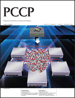

EMSL Arrows - An Easier Way to Use NWChem¶
Are you just learning NWChem and would like to have an easy way to generate input decks, check your output decks against a large database of calculations, perform simple thermochemistry calculations, calculate the NMR and IR spectra of modest size molecule, or just try out NWChem before installing it? EMSL Arrows scientific service can help. A Web API to EMSL Arrows is now available for Alpha testing. Click on this link. For more information contact Eric Bylaska (eric.bylaska@pnnl.gov).
Besides using the Web API you can also use EMSL Arrows by just sending a simple email. Try it out by clicking here to send an email to arrows@emsl.pnnl.gov.
{kind=link}
EMSL arrows is a scientific service that uses NWChem and chemical computational databases to make materials and chemical modeling accessible via a broad spectrum of digital communications including posts to web APIs, social networks, and traditional email. Molecular modeling software has previously been extremely complex, making it prohibitive to all but experts in the field, yet even experts can struggle to perform calculations. This service is designed to be used by experts and non-experts alike. Experts will be able carry out and keep track of large numbers of complex calculations with diverse levels of theories present in their workflows. Additionally, due to a streamlined and easy-to-use input, non-experts will be able to carry out a wide variety of molecular modeling calculations previously not accessible to them.
You do not need to be a molecular modeling expert to use EMSL Arrows. It is very easy to use. You simply email chemical reactions to arrows@emsl.pnnl.gov and then an email is sent back to you with thermodynamic, reaction pathway (kinetic), spectroscopy, and other results. There are currently 42,000+ calculations in the EMSL Arrows database and it is growing every day. If an EMSL Arrows request requires a calculation not already in the database, then it will automatically start the calculation on a small number of freely available computers and send back the results when finished. More information can be found at Arrows. We would like thank the DOD SERDP program and the DOE OS OBER EMSL project for their support.
Tutorial on YouTube (mobile devices)
NWChem 6.6 has been released¶
NWChem team is pleased to announce the 6.6 release. We would like to express our sincere thanks to all the authors and contributors who made this release possible. This release includes several new capabilities and bug fixes. The key features of NWChem 6.6 include:
- New qmd module AIMD (NVT, NVE) for molecular and finite systems. It can be used with all Gaussian basis set ground and excited-state methods in NWChem that can provide an energy/gradient (analytic or numerical). It can also be combined with COSMO. A qmd_analysis standalone code is also provided to analyze the trajectory data.
- York-Karplus approach in COSMO (keywords to invoke the Klamt-Schuurmann approach is included in the documentation). With the extensive changes that were made in the COSMO module, the Klamt-Schuurman approach is not perfectly backward compatible with the previous 6.5 release. Some cases show small differences in the energies. We are working on a patch for backward compatibility.
- Improvements in the NWXC module (experimental)
- Integration of FEFF6 library into AIMD (FEFF is an automated program for ab initio multiple scattering calculations of X-ray Absorption Fine Structure (XAFS), X-ray Absorption Near-Edge Structure (XANES) and various other spectra for clusters of atoms developed at the University of Washington (John Rehr’s group) http://feffproject.org/ ).
- New implementation of the PAW method into PSPW. Simple to use, just include PAW potential library in the PSPW simulation.
- Grimme2, and Grimme3 potentials added to NWPW
- MGGA-MVS Exchange functional added to gaussian DFT module
- Initial convergence of NWPW wavefunctions now done using finer grids in successive stages.
- Reading and writing of NWPW wavefunctions in ASCII format. To use just append .ascii to the NWPW vectors filename
- Metropolis NVT and NPT added to PSPW
- Equation parser for defining collective variables in Metadynamics and TAMD
- New NEB solver based on Full Approximation Scheme (FAS) solver. Currently only available on Bitbucket (https://bitbucket.org/ebylaska/python-neb.git). Integrated version will be available soon in the development tree.
- Parallel in time integrator for use with NWChem. Python programs available at ftp://ftp.aip.org/epaps/journ_chem_phys/E-JCPSA6-139-011332/
- Trajectories from the NWChem molecular dynamics module can be exported in the xyz format
- Intel Xeon Phi port for MR-CCSD(T)
- The supported version of the Global Arrays library is now 5-4
- New ARMCI_NETWORK=MPI-PR (MPI progress ranks). It is the recommended option (performance-wise) when no other native ports are available.
- Streamlined installation (automated detection of MPI variables)
- Improved ScaLapack and ELPA integration. The current ELPA interface is compatible with the 2015.05 release.
- Improved parallelization in DFT Charge-Density fitting (removed semi-direct option)
- Improved parallel scalability of Semi-direct MP2
- Improved stability of in-core installation (e.g.
USE_NOIO=y) of Semi-direct MP2 - Improvements in Xeon Phi offloading for single reference [Intel Xeon Phi port for MR-CCSD(T)] (https://nwchemgit.github.io/TCE.html#ccsdt-and-mrccsdt-implementations-for-intel-mic-architectures)
- New LINUX64 architecture available: ppc64le
- Bug fix for CDFT
- Bug fix for anisotropic part of the DFT polarizabilities
- Bug fix in PSPW implementation of Electron Transfer calculation (i.e. periodic version of ET module)
NWChem among 13 science projects selected to run on the 300-petaFLOPS Summit¶
In preparation for next-generation supercomputer Summit, the Oak Ridge Leadership Computing Facility (OLCF) selected 13 partnership projects into its Center for Accelerated Application Readiness (CAAR) program. A collaborative effort of application development teams and staff from the OLCF Scientific Computing group, CAAR is focused on redesigning, porting, and optimizing application codes for Summit’s hybrid CPU–GPU architecture. Researchers from Pacific Northwest National Laboratory and IBM Almaden Research Center aim to scale the NWChem application to utilize GPU accelerators to provide benchmark energies to allow for accurate parameterization of force fields for glycans as well as develop and disseminate an open-source database of accurate glycan conformational energies. New implementations of high-accuracy methods capable of taking advantage of Summit computational resources will significantly shift the system-size limit tractable by very accurate yet expensive methods accounting for the inter-electron correlation effects. https://www.olcf.ornl.gov/caar/
NWChem Tutorial at NSCCS¶
Two day workshop (April 21st-22nd 2015) will introduce researchers in the field of computational chemistry to the NWChem software package. NWChem aims to provide its users with computational chemistry tools that can handle (bio)molecules, nanostructures, and solid-state from quantum to classical, and all combinations thereof. https://web.archive.org/web/20150911003831/https://www.nsccs.ac.uk/NWChem2015.php
EMSL Named an Intel Parallel Computing Center¶
Intel has named EMSL, located at Pacific Northwest National Laboratory, as an Intel Parallel Computing Center. As an Intel PCC, EMSL’s scientific computing team will work with Intel to modernize the codes of NWChem to take advantage of technological advancements in computers. NWChem is one of the Department of Energy’s premier open-source computational chemistry software suites and has been developed at EMSL. The modernized codes will be applicable to several science drivers including studies of aerosol particles, soil chemistry, biosystems, hormone-cofactor functionality in proteins, ionic liquids in cells, spectroscopies, new materials and large-scale reaction mechanisms. https://web.archive.org/web/20170502154826/http://www.emsl.pnl.gov/emslweb/news/emsl-named-intel%C2%AE-parallel-computing-center
NWChem SC2014 paper¶
This paper presents the implementation and performance of the highly accurate CCSD(T) quantum chemistry method on the Intel Xeon Phi coprocessor within the context of the NWChem computational chemistry package. The widespread use of highly correlated methods in electronic structure calculations is contingent upon the interplay between advances in theory and the possibility of utilizing the ever-growing computer power of emerging heterogeneous architectures. We discuss the design decisions of our implementation as well as the optimizations applied to the compute kernels and data transfers between host and coprocessor. We show the feasibility of adopting the Intel Many Integrated Core Architecture and the Intel Xeon Phi coprocessor for developing efficient computational chemistry modeling tools. Remarkable scalability is demonstrated by benchmarks. Our solution scales up to a total of 62560 cores with the concurrent utilization of Intel Xeon processors and Intel Xeon Phi coprocessors. New CCSD(T) implementation is available in the 6.5 release of NWchem http://sc14.supercomputing.org/schedule/event_detail-evid=pap217.html
NWChem 6.5 has been released¶
NWChem team is pleased to announce the 6.5 release. We would like to express our sincere thanks to all the authors and contributors who made this release possible. This release includes several new powerful capabilities.
- Analytical TDDFT gradients. Developers: Niri Govind, Huub van Dam, Daniel Silverstein (Jensen Group, Penn State University). D.W. Silverstein, N. Govind, H.J.J. van Dam, L. Jensen, “Simulating One-Photon Absorption and Resonance Raman Scattering Spectra Using Analytical Excited State Energy Gradients within Time-Dependent Density Functional Theory,” J. Chem. Theory Comput. 9, 5490 (2013). http://pubs.acs.org/doi/abs/10.1021/ct4007772
- Analytical COSMO gradients. Developers: Huub van Dam.
- Enhanced handling of COSMO parameters. Developers: Marat Valiev.
- SMD (Solvation Model Based on Density) Model. Developers: Alek Marenich (Truhlar/Cramer Group, University of Minnesota), Niri Govind
- VEM (Vertical Excitation or Emission) Model. Developers: Alek Marenich (Truhlar/Cramer Group, University of Minnesota), Niri Govind
- Analytical 2nd derivatives for Becke97 style XC functionals. Developers: Tobias Risthaus (University of Bonn).
- Open and closed-shell polarizabilities. Developers: Fredy Aquino (Schatz Group, Northwestern University), Jochen Autschbach (SUNY, Buffalo). F.W. Aquino, G.C. Schatz, “Time-Dependent Density Functional Methods for Raman Spectra in Open-Shell Systems”, J. Phys. Chem. A, 2014, 118 (2), pp 517–525. http://pubs.acs.org/doi/abs/10.1021/jp411039m
- Exchange-hole dipole moment method (XDM). Developers: Alberto Otero de la Roza (National Institute for Nanotechnology, NRC), Edoardo Apra.
- Calculation of transition densities for excited-states. Developers: Niri Govind.
- Complete list of exchange-correlation functionals within planewave DFT. Developers: Huub van Dam, Eric Bylaska.
- SCS method for MP2/CCSD. Developers: Massimo Malagoli (Penguin Computing).
- Improved stability of in-core (a.k.a no I/O) MP2. Developers: Edoardo Apra.
- Accurate calculation of Electron Affinities (EA) and Ionization Potentials (IP) with equation-of-motion coupled-cluster theory (IP/EA-EOMCCSD). Developers: Kiran Bhaskaran Nair (Mark Jarrell, Juana Moreno, William Shelton Groups, LSU), Karol Kowalski. Kiran Bhaskaran-Nair, K. Kowalski, J. Moreno, M. Jarrell, W.A. Shelton, “Equation of motion coupled cluster methods for electron attachment and ionization potential in fullerenes C60 and C70,” J. Chem. Phys. 141, 074304 (2014). http://dx.doi.org/10.1063/1.4891934
- Enabling non-iterative CCSD(T) and CR-EOMCCSD(T) calculations with large tiles (new parallel algorithm based on the sliced representation of multi-dimensional tensors). Developers: Karol Kowalski.
- new TCE 4-index transformation for RHF/ROHF references. Developers: Karol Kowalski.
- Intel MIC port for the TCE CCSD(T) module. Developers: Edoardo Apra, Michael Klemm (Intel), Karol Kowalski.
- Reducing memory requirements in beta-hyperpolarizability linear response CCSD method. Developers: Karol Kowalski
- Performance optimizaton of spin-adapted CCSD implementation for closed-shell systems. Developers: Victor Anisimov (National Center for Supercomputing Applications, University of Illinois at Urbana-Champaign), Edoardo Apra.
- Temperature accelerated molecular dynamics (TAMD). Developers: Ying Chen (Weare Group, UCSD), Eric Bylaska.
- Added equation input to TAMD and Metadynamics. This allows the user the freedom to define unique collective variables in free energy simulations. Developers: Eric Bylaska.
- Frozen Phonon in BAND. Developers: Eric Bylaska
- 2d surface geometry optimizations. Developers: Eric Bylaska
- Interface to FEFF6L. Developers: Eric Bylaska
- FMM implementation of ion-electron interactions in AIMD/MM. Developers: Eric Bylaska
- Constant temperature and pressure Metropolis Monte-Carlo (beta) added to PSPW.
- Ability to assign different basis sets based on on atom name in QM/MM calculations. Developers: Marat Valiev.
- Complete handling of space groups. Developers: Eric Bylaska.
- Mingw32 port for Windows 32-bit environments. Developer: Edoardo Apra.
NWChem 6.3 release now available¶
On May 17, 2013 NWChem version 6.3 was released.
NWChem highlighted in DOE Pulse¶
NWChem’s efforts to solve chemistry challenges with high performance computing were highlighted in DOE Pulse.
NWChem 6.1.1 bug fix release now available¶
On June 26, 2012 NWChem version 6.1.1 was released. This version is solely a bug fix release with the same functionality as NWChem 6.1.
NWChem Schedules Tutorials and Hands-On Training¶
Centers or sites interested in hosting a workshop or tutorial with or without hands-on training, please contact nwchemgit@gmail.com
Past tutorial/training sessions:
- A three-day tutorial and hands-on training at A*STAR in Singapore on October 23-25, 2012
- A three-day tutorial and hands-on training at the National Supercomputer Center in Beijing on October 17-19, 2012
- A two-day tutorial and hands-on training at the LONI Institute on the Louisiana State University (Baton Rouge, LA) campus June 8-9, 2012
- A two-day tutorial and hands-on training at EPCC in Edinburgh, UK on June 13-14, 2011
- A two-day tutorial and hands-on training at LRZ in Garching, Germany on June 9-10, 2011
- A three-day tutorial and hands-on training at the National Supercomputer Center in Beijing on December 11-13, 2010
- A two-day tutorial and hands-on training at NCSA in Urbana on December 1-2, 2010
- A 2-hour tutorial at the Pacific Northwest AVS meeting held at PNNL on September 15, 2010
NWChem 6.1 has been released¶
On January 27, 2012 NWChem version 6.1 was released. An overview of the changes, added functionality, and bug fixes in this latest version can be found.
PCCP Perspective Published¶

Developers of NWChem at EMSL were the lead authors on a perspective article in the highly ranked PCCP journal on utilizing high performance computing for chemistry and parallel computational chemistry. The article and cover were published in Phys. Chem. Chem. Phys. 12, 6896 (2010).
NWChem released as open-source¶
On September 30, 2010 NWChem version 6.0 was released. This version marks a transition of NWChem to an open-source software package. The software is being released under the Educational Community License 2.0 (ECL 2.0).
New functionality, improvements, and bug fixes include:
- Greatly improved memory management for TCE four-index transformation, CCSD(T), CR-EOMCCSD(T), and solver for EOMCCSD
- Performance and scalability improvments for TCE CCSD(T), CR-EOMCCSD(T), and EOMCCSD
- TCE based static CCSD hyperpolarizabilities
- New exchange-correlation functionals available in the Gaussian DFT
module
- Range-separated functionals: CAM-B3LYP, LC-BLYP, LC-PBE, LC-PBE0, BNL. These functionals can also be used to perform TDDFT excited-state calculations
- SSB-D functional
- Double hybrid functionals (Semi-empirical hybrid DFT combined with perturbative MP2)
- DFT response calculations are now available for order 1 (linear response), single frequency, electric field and mixed electric-magnetic field perturbations.
- Spin-orbit now works with direct and distributed data approaches
- Greatly improved documentation for QM/MM simulations
- Bug fix for DISP: Empirical long-range vdW contribution
- Bug fix for Hartree-Fock Exchange contributions in NMR
- Plane-wave BAND module now has parallelization over k-points, AIMD, and Spin-Orbit pseudopotentials
- Plane-wave modules have improved minimizers for metallic systems and metadynamics capabilities